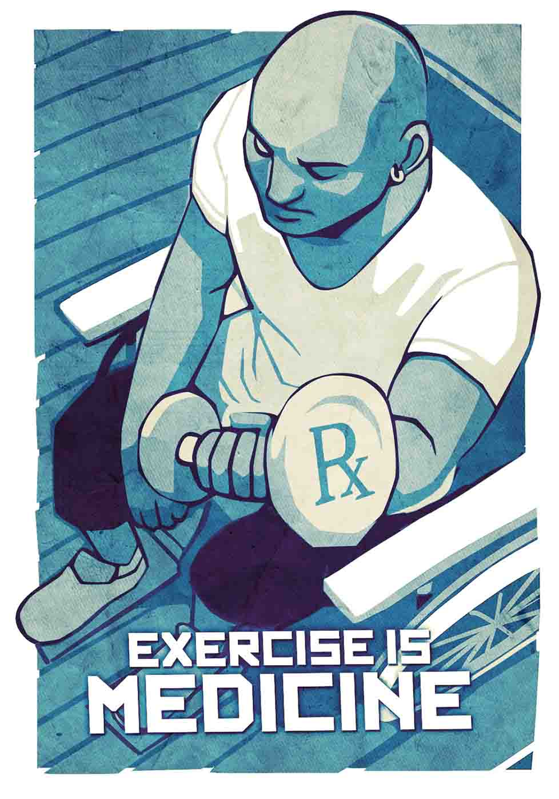

Exercise habits are as important a vital sign as a person's pulse, heart rate, and temperature.
Doctors should ask about, and record, their patients' activity levels.
150 minutes per week of moderate activity is recommended for baseline health benefits.
Exercise can also be included in a treatment plan: for injury recovery, weight loss, and even some mood disorders.
